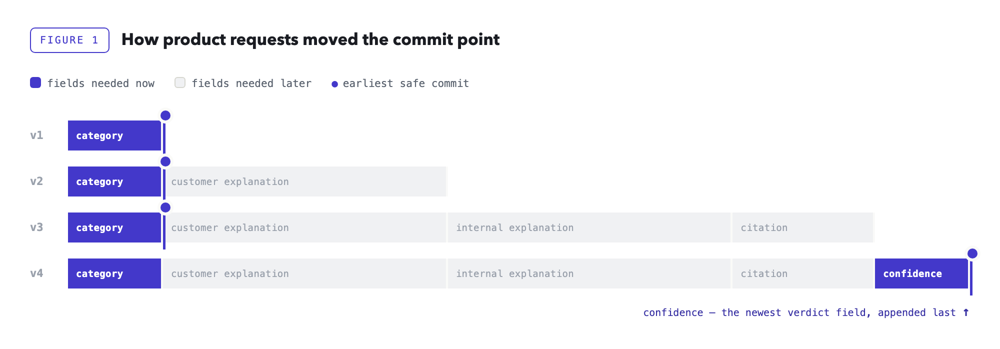
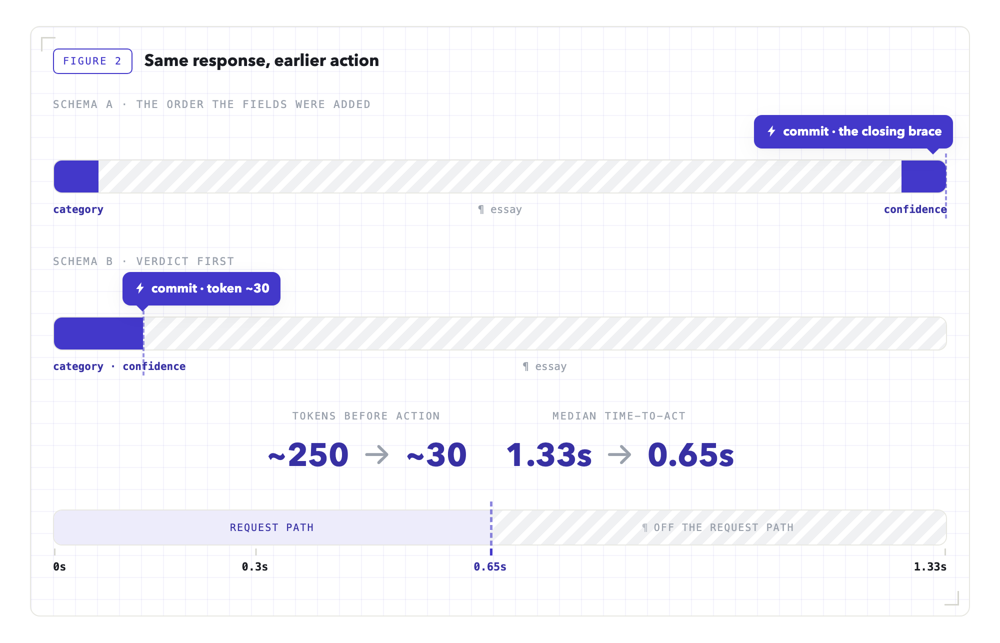
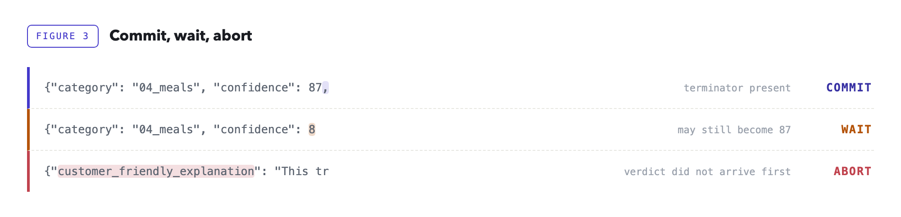
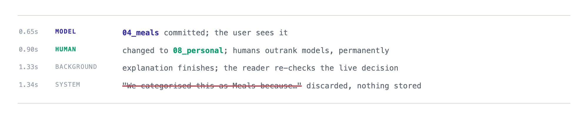

How we cut median LLM time-to-act from 1.33s to 0.65s by putting the decision fields first
A structured LLM response can become useful before it becomes complete.
In our transaction classifier, the category and confidence score arrived in roughly the first thirty output tokens. That was enough for the application to act. The next two hundred or so tokens were explanations, citations, and internal notes intended for humans.
Yet we had been treating the entire JSON object as one atomic result.
Once we put the decision fields first and acted as soon as they became structurally final, median time-to-act fell from 1.33 seconds to 0.65. The explanation continued in the background.
That response shape had not been designed in one sitting. It had accumulated one reasonable product request at a time.
At first, the classifier had one job: look at a bank transaction and return a category. Coffee in, 04_meals out. The response was tiny and the interface felt immediate.
Then product did what product does. The app needed to explain each category, because a label that appears from nowhere does not inspire confidence, so we added a customer-friendly explanation. Our internal accountants wanted a more technical explanation and a citation to the relevant guidance, so they could review a classification when something looked wrong. Finally we added a confidence score, to route uncertain transactions into a review queue.
Every field had a legitimate audience. They simply did not have the same deadline. Category determined what the application did immediately, and confidence decided routing. The explanations and the citation belonged to screens and investigations that happened later, if at all.
None of those additions seemed large enough to justify redesigning the request path. Together, however, they made the application wait for every audience at once, and pushed the moment of action all the way to the closing brace.
The obvious remedies all looked expensive. We could split the work into two model calls, but then the second call might explain a different verdict from the one we had already committed. It would also repay per-call overhead, consume more rate-limit capacity, and complicate failure handling.
The eventual fix did not require a second model call or a shorter response. It required a different way of reading the response we already had.
Most structured LLM responses serve two audiences. The application needs a short decision now. A human may need supporting prose later — an explanation, a citation, an audit note. Call them the verdict and the essay.
A response from our classifier, lightly redacted, makes the split concrete:
{
"category": "09_general_purchase",
"confidence": 75,
"customer_friendly_explanation": "This purchase has been categorised as a general business purchase. If it was for stock, office equipment, or personal use, you can update the category.",
"internal_explanation": "The description denotes a payment to a general online marketplace. No invoice or line-item detail is attached and the amount is small, so the safest default for an ambiguous generic merchant is a general business purchase.",
"citation": "Internal bookkeeping guidance, general business purchase."
}The first two fields are the verdict: category is written to the transaction, confidence decides whether it enters a review queue. Everything after them is the essay. It is not filler — an accountant reviewing a questionable classification needs it — but nothing in the request path is waiting on it.
Requirements expand the essay far faster than the verdict. A classifier starts with a single decision field and accumulates prose around it, while the decision itself barely changes.

confidence, the second field needed immediately, was appended after it.The response was already arriving one token at a time. We had simply decided that none of those tokens counted until the last one appeared.
We had been treating the closing brace as if it marked the moment the model had finished deciding. It did not. It marked the moment the model had finished explaining itself.
That distinction is the entire technique.
Scope note. Reordering an autoregressive output may affect the model's final choice, so accuracy must be benchmarked separately. Early reading cannot alter tokens already emitted; in our schema, the later prose explained the verdict rather than deriving it.
Streaming is usually treated as a UI feature: humans are comfortable reading half a sentence, so tokens appear as they are generated and perceived latency improves. Machines are less accommodating. Half a JSON document is not JSON: there is no closing brace, strings may be unfinished, and a conventional parser is correct to reject every incomplete prefix.
A streamed response arrives as a sequence of frames, each carrying a delta: the next fragment of generated text. The boundaries are arbitrary. A frame may end inside a quoted string, after the first digit of a number, or immediately before the comma that proves a value is complete. No business logic should assign meaning to an individual frame; the only meaningful object is the accumulated buffer.
Structured output changes what can be inferred from that buffer. When a provider enforces the schema during decoding, the model is no longer free to produce arbitrary text. That is a useful foundation, but it does not, by itself, make an early commit safe. The difficult part is knowing when a field is finished.
A partial-JSON parser may tell you that a field has appeared in the buffer. That does not mean its value is complete.
Consider:
{
"category": "04_meals",
"confidence": 8The parser can already see confidence, but the next chunk may contain:
7,The final value is 87, not 8.
A string is complete only after its closing quote. A number is complete only after a valid terminator, such as a comma, closing brace, or whitespace.
A partial parse that may disagree with the final JSON is not safe to use. Early commit therefore means finding a prefix whose meaning can no longer change, even though the full response is still arriving.
The first implementation step was almost disappointingly simple: we placed the verdict fields first.
Until then, the fields had sat in the order they were added, which put confidence, the newest arrival, at the very end. Nobody had chosen that order. It was the order the requirements arrived in.
A simplified version of the schema looked like this:
{
"type": "object",
"additionalProperties": false,
"properties": {
"category": { "type": "string", "enum": ["01_income_employment", "...", "08_personal"] },
"confidence": { "type": "number", "minimum": 0, "maximum": 100 },
"customer_friendly_explanation": { "type": "string" },
"internal_explanation": { "type": "string" },
"citation": { "type": "string" }
}
}The exact way field order is expressed varies by provider: some expose an explicit ordering property, others follow the order of properties in the schema. Strict modes typically also require every property to appear in
required, and commonly reject schemas that allow additional properties. Either way, test it against the specific model and API path you use in production.
Most engineers first encounter a schema as a validation contract: the completed response must have this shape.
During constrained generation, it serves another purpose. It influences what the decoder is allowed to produce next.
The schema is not only a contract. It is a schedule.
The last verdict field defines the earliest possible commit point.

Nothing generates faster; the useful tokens simply arrive earlier.
Provider requirement. The API must enforce the schema during generation and preserve field order while streaming. Verify both on the exact model and API path you use. And note: streamed tool-call arguments often expose the same partial-JSON shape.
We wanted the early path to be conservative.
A missing early verdict was acceptable. The system could fall back to waiting for the complete response or use a deterministic default.
A wrongly parsed verdict was not acceptable.
The parser therefore demands three proofs.
For category, the parser waits for the closing quote.
For confidence, it waits for a valid JSON terminator.
The fragment below is not enough:
"confidence": 8This one is:
"confidence": 8,The comma proves that the number has ended.
A syntactically valid string is not necessarily a valid category.
The parser checks the extracted value against the same enumeration used in the schema.
This matters even when constrained decoding is enabled. It gives the application its own explicit invariant rather than delegating all trust to the provider.
It also protects against prefix ambiguity.
Suppose both of these values exist:
04_meals
04_meals_entertainmentSeeing the characters 04_meals is not enough. Seeing a closing quote and confirming membership in the allowed set is.
If an explanation field appears before the verdict is complete, the provider or model has violated the ordering contract.
We do not try to recover creatively.
We abort the early path and return to the deterministic pipeline.
A missing prediction is recoverable. A confidently misparsed one is not.

7, and the final value becomes 87; that is why the middle buffer waits.The decision path, condensed to what matters:
DECISION_RE = re.compile(
r'"category"\s*:\s*"(?P<category>[A-Za-z0-9_]+)"\s*,\s*'
r'"confidence"\s*:\s*(?P<confidence>\d+(?:\.\d+)?)'
r'\s*[,}\s]' # ← check 1: terminator required
)
class DecisionParser:
def __init__(self) -> None:
self.buffer = ""
def feed(self, chunk: str) -> Optional[Decision]:
self.buffer += chunk
match = DECISION_RE.search(self.buffer)
if match:
category = match.group("category")
if category not in CATEGORY_ENUM: # ← check 2: membership
raise AbortEarlyCommit(category)
confidence = float(match.group("confidence"))
if not 0 <= confidence <= 100:
raise AbortEarlyCommit(confidence)
return Decision(category, confidence)
# order check only after the match attempt: one chunk may hold
# the end of the verdict and the start of the essay
if any(m in self.buffer for m in ESSAY_MARKERS): # ← check 3: order
raise AbortEarlyCommit("essay before verdict")
return NoneThe three checks marked above are the whole idea. The full listing — imports, the enum set, the frozen dataclass — and a test suite covering the cases in this article are here: github.com/nturusin/llm-streaming-early-commit. No dependencies beyond the standard library.
The order inside feed matters.
A single frame may contain the end of confidence and the beginning of the first explanation. If we checked for essay fields first, we could reject a perfectly valid stream.
The parser therefore tries to prove that the verdict is complete before checking whether anything arrived out of order.
It also parses the accumulated buffer, never the latest chunk. Chunk boundaries are transport details, not syntax.
At this point, the decision is locally final even though the response is globally incomplete.
At 0.65 seconds, the verdict replaced the deterministic provisional category already on screen. The response ran on to 1.33 seconds, but that remaining work no longer blocked the user. This is why we measure time-to-act, not merely time-to-complete.
Committing early does not require abandoning the response.
After the verdict lands, the open stream is handed to a bounded background reader. That reader:
The background reader does not create the guarantee; Part II's structural proofs do. Its job is to verify that the completed object preserves the verdict already committed.
The completed object still gives us a second line of defense. If a provider update ever violates the invariant, the background reader is where the mismatch becomes visible.
There is another race that does not occur inside the JSON stream. The application keeps changing while the stream is open: a human may replace the model's verdict before the explanation finishes.

Before storing the essay, the background reader re-checks ownership of the live decision. If a human has overruled the model, the explanation is discarded.
Never attach model prose to a decision the model no longer owns.
If the stream fails during the background drain, the verdict remains valid. The explanation slot stays empty. The user does not lose the category they already received.
The parser may be small, but it sits inside a less glamorous collection of deadlines, cancellation rules, connection limits, and fallbacks.
Those details determine whether the optimization survives production.
| Risk | Policy |
|---|---|
| Slow verdict | Hard 2-second deadline to the verdict; on expiry the deterministic pipeline answers. Worst observed: 0.91s. |
| Caller disconnects | Cancel the upstream generation before the commit. After it, the drain is expected to outlive the request. |
| Retry temptation | Never retry a live stream: a retry is a second generation, a second bill, and a race between two commits. |
| Proxy buffering | Any middle layer can quietly batch the stream and everything still "works", just late. Test incrementality end to end. |
| Connection pressure | Bound the background drains (we ran 64) and size connection pools for full-response lifetime, not verdict time. |
| Deploys | Cancelling in-flight drains is a product decision, not a side effect: the verdict stays, only essays are lost. |
| Missing usage data | Token accounting often rides the final frame; close a stream early and the cost dashboard undercounts politely. |
| Cost pressure | Closing the stream immediately after the verdict saves output tokens, but forfeits the essay: a separate optimization with different product semantics. |
We measured on the production path rather than in a harness. The classifier calls Gemini 3.5 Flash through the Vertex AI API in europe-west2, behind our internal LLM proxy, using the real prompt and the real schema: about 24,000 input tokens of categorization rules and merchant context, and an average of 250 output tokens per response. The figures below cover 5,000 live calls.
| Metric | median | worst observed |
|---|---|---|
| Time to early verdict | 0.65s | 0.91s |
| Time to complete response | 1.33s | 1.79s |
| Early parse disagreed with final JSON | 0 | — |
| Out-of-order aborts | 0 | — |
The real guarantee is the structure (quote, terminator, membership), not the tally.
The zero rows are a sanity check, not the proof. Across 5,000 calls the early parse never disagreed with the completed object, but zero observed disagreements still leaves, by the rule of three, roughly a 0.06% upper bound on the true disagreement rate. The guarantee that matters is structural: the closing quote, the terminator, and enum membership. The counts only confirm that nothing in production contradicted it.
The median time-to-act fell by approximately half. That ratio will not transfer directly to another application.
Note the shape of this workload: against roughly 24,000 input tokens, 250 output tokens is almost nothing. The prefill cost is fixed and largely outside your control; the decode tail is not. Early commit removes most of the part you can actually influence — which is also why the gain depends on the ratio of verdict tokens to essay tokens rather than on raw model speed.
If the complete response already fits comfortably inside the application's latency budget, there may be nothing worth optimizing.
Measure the real payload. Published model latency says little about the position of the fields your own system needs.
Early commit works when the critical fields can be made structurally final. Three situations disqualify it:
DESIGN
PARSE
VALIDATE
OPERATE
None of the parts is individually novel: constrained decoding, incremental parsing, background work, and deterministic fallbacks are all ordinary. What the arrangement buys is a change in when the system is allowed to act. Put the decision fields first so they finish early; prove they are structurally final rather than merely present; commit; then drain the explanation off the request path and check that the finished object still agrees with what you committed.
A structured LLM response does not have to become globally complete before part of it becomes locally final.
Once the decision is irreversible, the system can move.
The essay can finish its sentence.
Put a closed-set decision first and a long explanation last. Stream the response, record when the decision becomes structurally final, and compare that with the full-response time.
The reference implementation is at github.com/nturusin/llm-streaming-early-commit: the parser with its structural checks, and a probe that runs the check against a real model and reports whether field order held, whether the early verdict matched the completed object, and how much came off the critical path.
Official documentation:
generateContent documentation also states that fields are produced in schema-key order.ConverseStream and InvokeModelWithResponseStream for supported models.Verify schema enforcement, field ordering, and chunk behavior on the exact model and API path you plan to ship.
All figures created by the author.